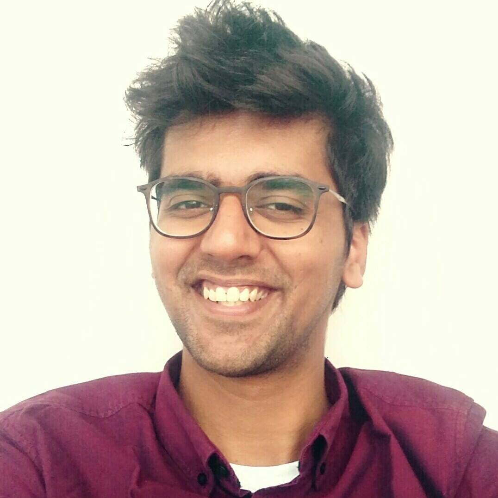

|
 |
Aseem Behl Doctoral Researcher |
Bio:
I am a doctoral research student at Max Planck Institute (MPI) for Intelligent Systems, Tübingen. I work on problems arising in perception and conrol for Autonomous Driving Systems. At MPI, I work with with Professor Andreas Geiger at the Autonomous Vision Group. Before joining MPI, I was a Masters student at IIIT, Hyderabad. My masters research was focused on design of learning algorithms for structured output SVM. I worked with Prof. M Pawan Kumar at Center for Visual Computing, Ecole Centrale Paris and Prof. Jawahar at the Centre for Visual Information Technology.
Publications:
Bounding Boxes, Segmentations and Object Coordinates: How Important is Recognition for 3D Scene Flow Estimation in Autonomous Driving Scenarios? In Proceedings of the International Conference on Computer Vision (ICCV), 2017. Aseem Behl, Omid Hosseini Jafari, Siva Karthik Mustikovela, Hassan Abu Alhaija, Carsten Rother, Andreas Geiger.
Computer Vision for Autonomous Vehicles: Problems, Datasets and State-of-the-Art Arxiv, 2017. Joel Janai, Fatma Güney, Aseem Behl, Andreas Geiger.
Optimizing Average Precision using Weakly Supervised Data. In Pattern Analysis and Machine Intelligence (PAMI), 2015. Aseem Behl, Pritish Mohapatra, C. V. Jawahar and M. Pawan Kumar.
Optimizing Average Precision using Weakly Supervised Data. In Proceedings of the IEEE Conference on Computer Vision and Pattern Recognition (CVPR), 2014. Aseem Behl, C. V. Jawahar and M. Pawan Kumar.
Learning to Rank using High-Order Information. In Proceedings of the European Conference on Computer Vision (ECCV), 2014. Puneet K. Dokania, A. Behl, C. V. Jawahar, M. Pawan Kumar.
A Corpus Linguistic Study of Bollywood Song Lyrics in the Framework of Complex Network. Proceedings of International Conference on NLP (ICON-2011). Chennai. 2011. Aseem Behl and Monojit Chowdhury.
Address:
Autonomous Vision Group
MPI Tübingen
Spemanstraße 34
72076 Tübingen
Contact:
Email: firstname DOT lastname AT g m a i l . c o m [Remove the spaces]